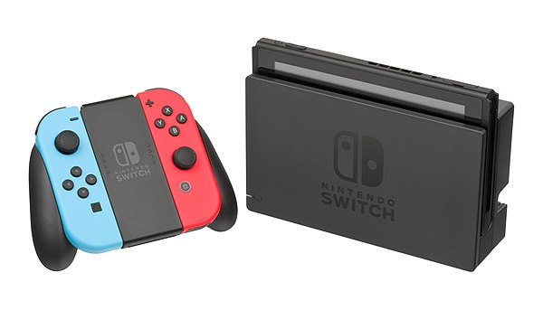

Nintendo Switch
The Nintendo Switch is a video game console developed by Nintendo and released worldwide in most regions on March 3, 2017. Released in the middle of the eighth generation of home consoles, the Switch succeeded the Wii U and competed with Sony's PlayStation 4 and Microsoft's Xbox One; it also competes with the ninth generation consoles, the PlayStation 5 and Xbox Series X/S.